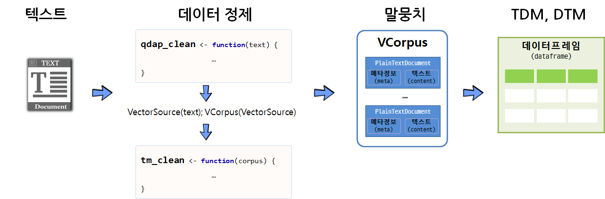
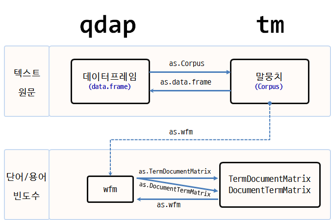
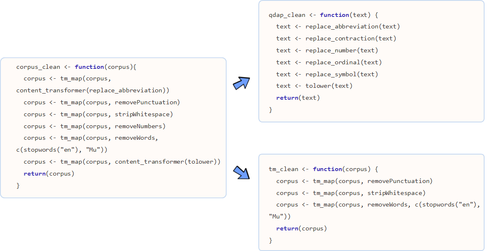
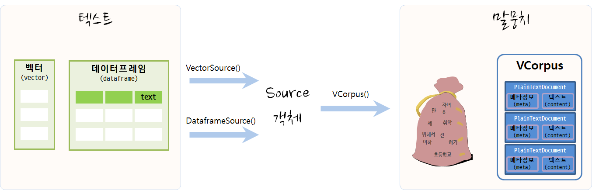
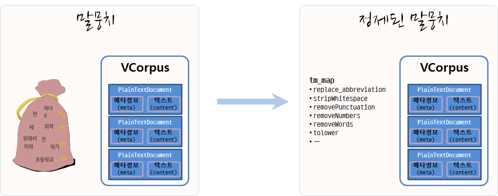
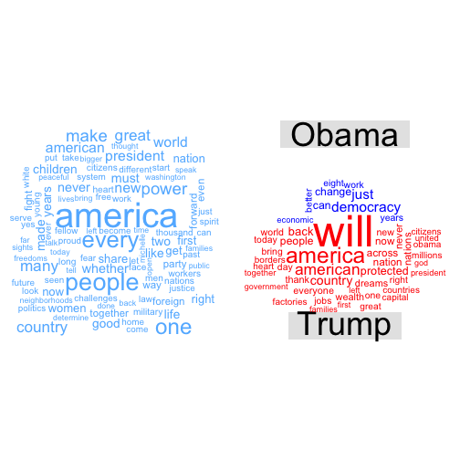
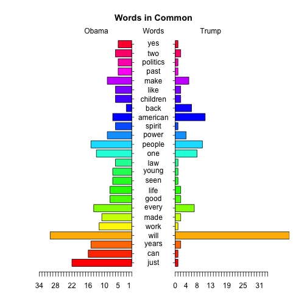

xwMOOC 기계학습
텍스트 단어구름(Word Cloud)
학습 목표
- 텍스트 데이터 분석 작업흐름을 이해한다.
- 단어주머니(Bag of Words) 모형을 이해한다.
- 텍스트 데이터 전처리 과정의 핵심 팩키지
tm과qdap을 활용한다.
1. 텍스트 분석 R 팩키지
- tm : 텍스트 마이닝
- SnowballC : 어간추출(Stemming)
- ggplot2 : 시각화
- wordcloud : 단어구름
2. 텍스트 분석 작업흐름도
텍스트 데이터를 말뭉치(Corpus)로 변환하여 데이터를 분석하는 것도 가능하지만, qdap 팩키지와 정규표현식의 기능을 적극 활용하여 가능하면 텍스트에서 전처리를 하고 나서, 말뭉치로 변환한 후에 tm 팩키지 정제기능을 활용하는 것도 가능하다. 물론 중복되는 부분도 있을 수 있으나 빨래를 할 때 세탁기로 넣어 한 번 돌리고, 손빨래로 두번째 빨래를 깔끔하게 마무리하는 것으로 봐도 좋을 듯 하다.
깔끔한 말뭉치로 텍스트 데이터가 정제되고 나면 행렬로 변화시켜 다양한 통계 분석을 시작한다.

2.1. qdap, tm 텍스트 자료구조 비교
텍스트 마이닝(Text Mining)을 위한 R의 대표적인 팩키지가 qdap tm 이다.
| 팩키지명 | 원 텍스트 | 단어 빈도수(word counts) |
|---|---|---|
| qdap | 데이터프레임(Dataframe) | 단어 빈도 행렬(Word Frequency Matrix) |
| tm | 말뭉치 (Corpus) | 단어 문서행렬(Term Document Matrix)/문서 단어행렬(Document Term Matrix) |
qdap은 원 텍스트 데이터를 데이터프레임 형태로 저장하는 반면에, tm 팩키지는 Corpus 말뭉치 형태로 원 텍스트 데이터를 저장한다는 점에서 차이가 난다.
두 팩키지 모두 공통으로 사용하는 단어/용어 빈도수에는 행렬(matrix)을 사용한다. 이를 그림을 표현하면 다음과 같다.

qdap텍스트 원문qdap_dat→qview(qdap_dat)tm텍스트 원문tm_dat→ inspect(tm_dat)qdap단어 빈도수qdap_wfm→ summary(qdap_wfm)tm단어 빈도수tm_tdm→ inspect(tm_tdm)
2. tm, qdap 데이터 정제 기능

단어 주머니 기법을 활용하여 텍스트를 분석할 때, 데이터 정제를 통해 단어를 합산하는데 큰 도움이 된다. 영어 단어 예를 들어, statistics, statistical, stats 등은 모두 통계라는 한 단어로 정리되면 좋다.
tm 팩키지 및 base 팩키지에 내장된 데이터 정제 기능은 다음과 같다.
- tolower():
base에 포함된 함수로 모든 문자를 소문자로 변환. - removePunctuation():
tm에 포함된 함수로 모든 구두점을 제거. - removeNumbers():
tm에 포함된 함수로 숫자를 제거 - stripWhitespace():
tm에 포함된 함수로 공백(whitespace)을 제거
qdap에는 좀더 다양한 텍스트 정제 함수가 지원된다.
- bracketX(): 괄호 내 모든 텍스트 제거
- “It’s (very) nice” → “It’s nice”
- replace_number(): 아라비아 숫자를 대응되는 영어문자로 변환
- “7” → “seven”
- replace_abbreviation(): 축약어를 대응되는 전체 문자로 풀어냄
- “Jan” → “Janunary”
- replace_contraction(): 단어 축약을 원래 상태로 되돌림
- “can’t” → “can not”
- replace_symbol(): 일반 기호를 대응되는 단어로 교체
- “$” → “dollar”
텍스트가 너무 자주 출현하여 거의 정보를 제공하지 않는 단어를 불용어(stop words) 라고 부른다. tm 팩키지에는 영어기준으로 174개 불용어가 등재되어 있다. 또한, 관심있는 주제로 문서를 모았다면 수집된 거의 모든 문서에 특정 단어가 포함되어 있어 이것도 도움이 되지 않아 불용어에 등록하여 텍스트 분석을 수행한다.
removeWords(text, stopwords("english"))
stop_words_lst <- c("rstudio", "statistics", stopwords("english"))
removeWords(text, stop_words_lst)stopwords("english") 영어불용어 사전에 “rstudio”, “statistics” 단어를 더해서 불용어 사전을 완성하고 나서 removeWords() 함수로 새로 갱신된 사전에 맞춰 불용어를 정리한다.
2.2. 텍스트에서 말뭉치(Corpus)로 변환
텍스트 마이닝을 통해 데이터를 분석하려면 우선 원데이터가 텍스트 형태로 되어 있고 이를 말뭉치로 변환하여야 한다. 데이터가 벡터 형태(연설문 등) 혹은 데이터프레임 형태(트위터 트윗 등)에 따라 VectorSource(), DataframeSource() 함수를 적용하여 Source 객체로 변형을 시킨다. 그리고 나서 VCorpus() 함수를 활용하여 말뭉치(Corpus)로 저장한다. 휘발성 말뭉치(Volatile Corpus, VCorpus)와 영구저장 말뭉치(Permanent Corpus, PCorpus)로 변환이 가능하다. 주로 VCorpus를 메모리에 적재하여 텍스트 데이터 분석에 활용한다.

2.3. 말뭉치 정제
텍스트를 말뭉치 객체로 저장시켜 놓으면, 말뭉치 정제 과정을 거치야 된다. 기본적으로 어떤 말뭉치 정제에 사용되는 기본 정제함수는 tm 팩키지를 활용하고, 추가적으로 qdap 팩키지 특수 말뭉치 정제 함수도 적극 활용한다.

2.4. 단어문서행렬(Term Document Matrix, TDM)
단어문서행렬을 통한 방법이 일반적으로 많이 사용된다. 이를 위해 입력값이 데이터프레임인 경우 DataframeSource, 벡터인 경우 VectorSource를 사용하여 말뭉치(Corpus)로 변환하고, 이를 TermDocumentMatrix 함수에 넣어 단어문서행렬을 생성한다. 물론 텍스트를 바로 넣어 wfm 단어빈도행렬(Word Frequency Matrix)을 생성시켜 분석을 하기도 하지만 일반적인 방식은 아니다.
TermDocumentMatrix() 함수를 활용하여 단어가 문서에 출현하는 빈도수를 행렬로 저장한다. 행렬형태 데이터를 저장하게 되면 고급 통계 분석이 가능하게 된다. DocumentTermMatrix()는 TermDocumentMatrix() 함수로 통해 나온 행렬을 전치(transpose)시킨 것이다.
3. 텍스트 데이터 시각화 1 2
오바마 퇴임 연설문과 트럼프 취임 연설문을 통해 텍스트 데이터를 시각화한다.
3.1. 환경설정
tm, qdap 텍스트 데이터 전처리를 위한 팩키지를 불러오고, 텍스트 시각화를 위한 wordcloud, plotrix 팩키지도 가져오고, 데이터 전처리 함수를 두개 생성한다. 하나는 텍스트 수준에서 텍스트 데이터를 전처리하는 함수로 qdap에서 불러오고, 또 다른 함수는 tm에서 지원하는 함수로 중복되는 부분도 있다. 상황에 따라 편리한 함수를 활용한다.
# 0. 환경설정 -------------------------------------------------------
library(tm)
library(tidytext)
library(qdap)
library(tidyverse)
library(wordcloud)
library(tibble)
library(plotrix)
library(stringr)
clean_text <- function(text){
text <- tolower(text)
# text <- removeNumbers(text)
# text <- bracketX(text)
text <- replace_number(text)
text <- replace_abbreviation(text)
text <- replace_contraction(text)
text <- replace_symbol(text)
text <- removePunctuation(text)
text <- stripWhitespace(text)
text <- str_replace_all(text, "americans", "america")
indexes <- which(text == "")
if(length(indexes) > 0){
text <- text[-indexes]
}
return(text)
}
clean_corpus <- function(corpus){
corpus <- tm_map(corpus, content_transformer(replace_abbreviation))
corpus <- tm_map(corpus, stripWhitespace)
corpus <- tm_map(corpus, removePunctuation)
corpus <- tm_map(corpus, removeNumbers)
corpus <- tm_map(corpus, removeWords, c(stopwords("en"), "Top200Words"))
corpus <- tm_map(corpus, content_transformer(tolower))
return(corpus)
}3.2. 데이터 불러오기
오바마 퇴임식 연설문과 트럼프 취임식 연설문을 불러온다.
# 1. 데이터 불러오기 -------------------------------------------------------
obama <- readLines("data/obama_farewell.txt", encoding = "UTF-8")
trump <- readLines("data/trump_inauguration.txt", encoding = "UTF-8")3.3. 데이터 전처리
텍스트를 넣어 qdap 팩키지 전처리 함수를 조합한 clean_text 함수를 통해 텍스트 데이터를 정제하고 나서 말뭉치(Corpus)를 생성시키고 나서 이를 또다시 clean_corpus 함수로 정제한다. 그리고 나서, 단어구름 시각화를 위한 데이터프레임 형태로 변환시킨다.
# 2. 데이터 전처리 -------------------------------------------------------
source("code/clean_fun.R")
make_corpus <- function(text) {
text_clean <- clean_text(text)
text_source <- VectorSource(text_clean)
text_corpus <- VCorpus(text_source)
corpus <- clean_corpus(text_corpus)
}
obama_corpus <- make_corpus(obama)
trump_corpus <- make_corpus(trump)
# 3. 말뭉치를 데이터프레임으로 변환 --------------------------------------
word_freq <- function(corpus) {
doc_tdm <- TermDocumentMatrix(corpus)
doc_m <- as.matrix(doc_tdm)
doc_term_freq <- rowSums(doc_m)
doc_word_freqs <- data.frame(term = names(doc_term_freq),
num = doc_term_freq) %>% arrange(desc(num))
return(doc_word_freqs)
}
obama_word_freqs <- word_freq(obama_corpus)
trump_word_freqs <- word_freq(trump_corpus)3.4. 텍스트 데이터 시각화
텍스트 데이터 시각화로 가장 많이 사용되는 단어구름(wordcloud)을 활용하여 트럼프 취임 연설문과 오바마 퇴임 연설문을 시각화한다. 오바마 퇴임 연설문, 트럼프 취임 연설문 각각에 대한 단어구름을 생성시키고 나서, 두 연설문의 공통된 단어 및 두 연설문에 공통적으로 나타나지 않는 차이나는 단어를 시각화한다.
마지막으로 두 연설문의 공통적으로 나타나는 단어만 뽑아 피라미드 그래프를 통해 공통적으로 언급하고 있으나 강도에 대한 부분을 시각화한다.
# 4. 시각화 --------------------------------------------------------------
## 4.1. 단어구름----------------------------------------------------------
par(mfrow=c(1,2))
blues <- brewer.pal(8, "Blues")[-(1:2)]
wordcloud(obama_word_freqs$term, obama_word_freqs$num, max.words=100, colors=blues)
reds <- brewer.pal(8, "Reds")[-(1:2)]
wordcloud(trump_word_freqs$term, trump_word_freqs$num, max.words=100, colors=reds)## 4.2. 공통 단어구름
all_obama <- paste(obama, collapse = " ")
all_trump <- paste(trump, collapse = " ")
obama_trump <- c(all_obama, all_trump)
obama_trump_corpus <- make_corpus(obama_trump)
obama_trump_word_freqs <- word_freq(obama_trump_corpus)
obama_trump_tdm <- TermDocumentMatrix(obama_trump_corpus)
obama_trump_m <- as.matrix(obama_trump_tdm)
commonality.cloud(obama_trump_m, colors ="steelblue1", max.words=100)
## 4.3. 비교 단어구름
colnames(obama_trump_tdm) <- c("Obama", "Trump")
obama_trump_df <- as.matrix(obama_trump_tdm) %>% as.data.frame()
comparison.cloud(obama_trump_df, colors = c("blue", "red"), max.words = 50)
## 4.4. 피라미드 그래프
par(mfrow=c(1,1))
common_words_25 <- obama_trump_df %>%
mutate(label = rownames(obama_trump_df)) %>%
dplyr::filter(Obama > 0 & Trump >0) %>%
mutate(diff = abs(Obama - Trump)) %>%
arrange(desc(diff)) %>% slice(1:25)
plotrix::pyramid.plot(common_words_25$Obama, common_words_25$Trump,
labels = common_words_25$label, gap = 8,
top.labels = c("Obama", "Words", "Trump"),
main = "Words in Common", laxlab = NULL,
raxlab = NULL, unit = NULL)
[1] 5.1 4.1 4.1 2.1
참고문헌
- Tyler W. Rinker, qdap-tm Package Compatibility
- Basic Text Mining in R
- Hands-On Data Science with R Text Mining, Graham.Williams
- Natural Language Processing Tutorial
- Statistics meets rhetoric: A text analysis of “I Have a Dream” in R
- How to Create WordCloud of Twitter Data using R Programming
- How to Clean the Twitter Data using R – Twitter Mining Tutorial